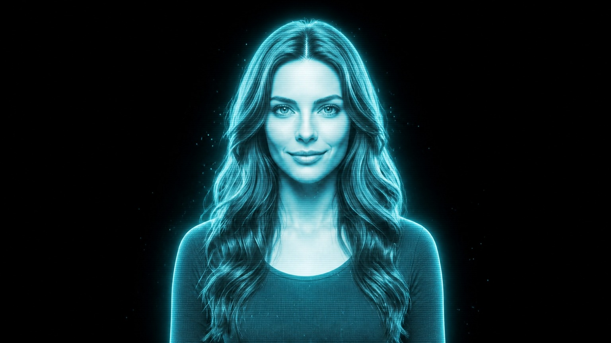
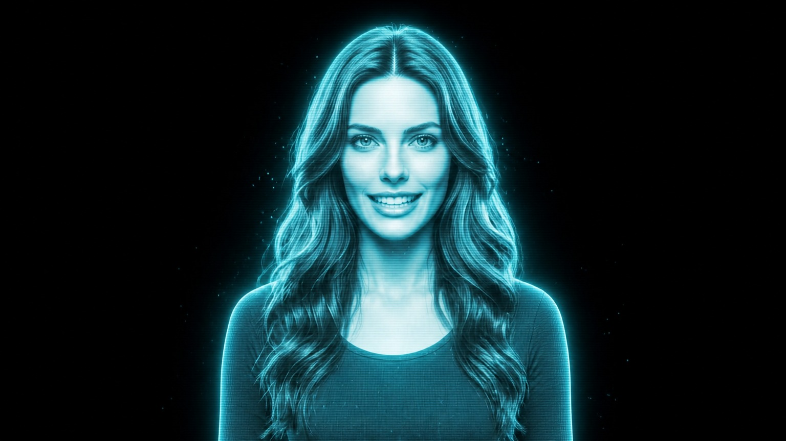
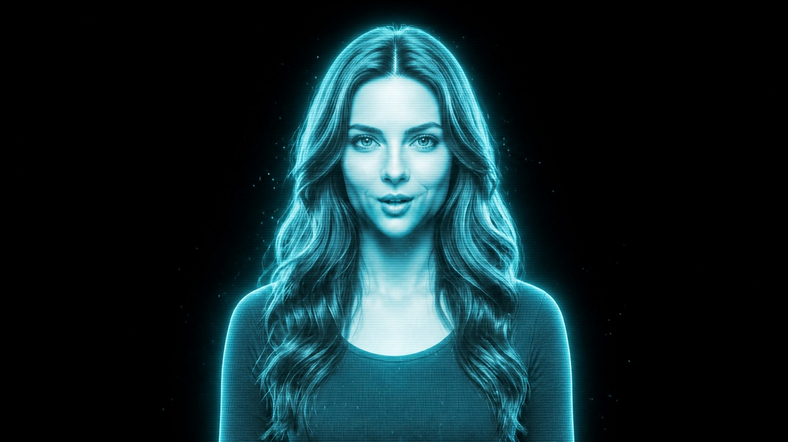
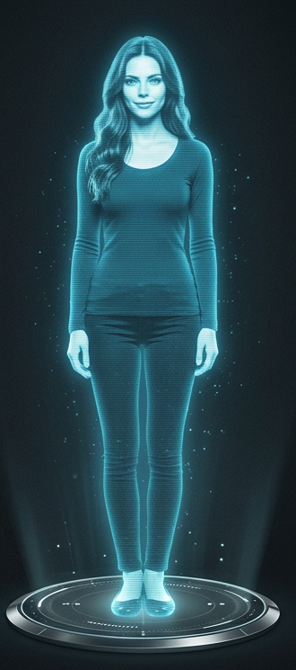
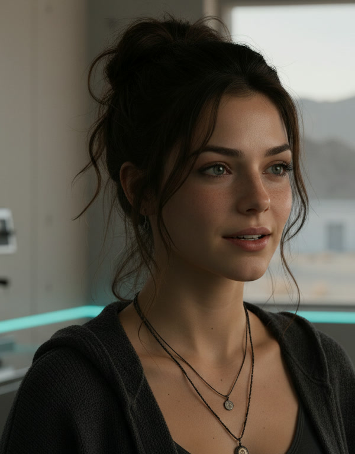
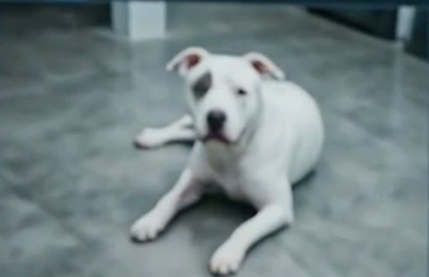

NOVA

CAM 06
LYRA RADIO
LIVE
Radio
Podcast
Stations
My music
Vertical window ↗
Tuning in…
Music
Lyra
H
hide UI
B
full body
V
lip sync / video
S
streamer
P
Patch
L
vertical
M
mirror
F
fullscreen
LYRA
Hologram and radio
GO LIVE